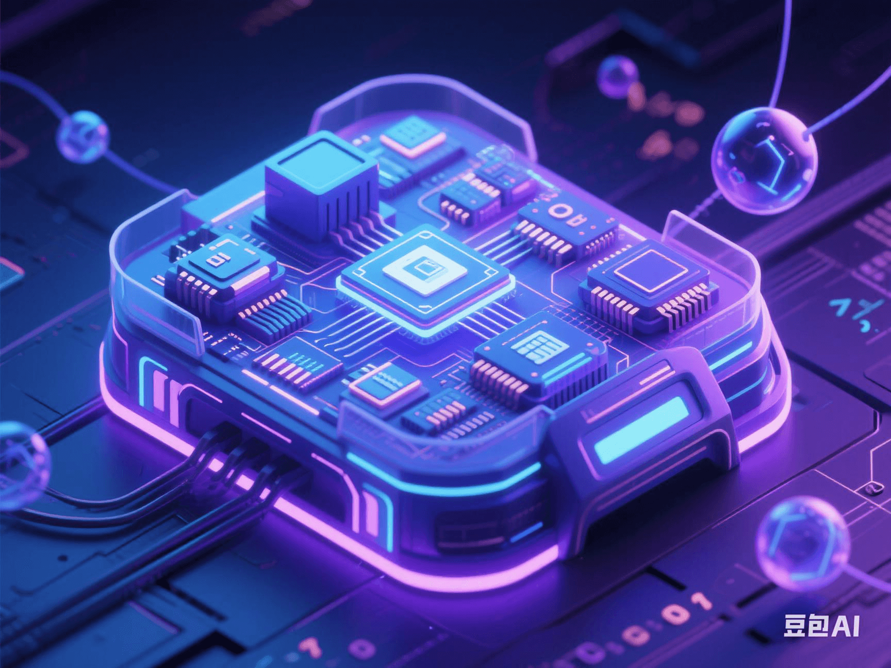

The Heart of the Quantum Computer Is Exposed for the First Time: Is It a Printing Press Worth Hundreds of Billions Hidden in the MRI Machine?
PeaceLove.Top Insights :2025-04-19
🧠 The 'Heart' of the Quantum Computer Is Exposed for the First Time: Is It a Printing Press Worth Hundreds of Billions Hidden in the MRI Machine? 💸⚛️
In 2025, the tech circle was hit by another storm 🌪️. The 'heart' component of the quantum computer was publicly unveiled for the first time, and it was actually hidden inside the familiar magnetic resonance imaging (MRI) machine! This breakthrough not only makes people re-evaluate the 'old guy' in the hospital corridor but also reveals the astonishing gold-mine value behind a high-brow term: 'The era of quantum computing commercialization may officially begin.' 💰
🧬 What Is the 'Heart' of Quantum Computing? Where Is It Hidden?
Scientists first showed the public a quantum bit core component based on 'nuclear spin resonance' technology, which looks like a miniaturized version of an MRI machine 🔍.
🔧 Although its structure is low-key, its principle is amazing 👇:
🧲 It uses magnetic fields and radio-frequency waves to regulate the spin state of atomic nuclei, enabling precise manipulation and reading of **quantum bits (qubits)**. Simply put, it's like using a 'medical device' to control 'computation faster than the speed of light'. 😮⚡ And this was the key to the past inability to achieve stable quantum operation, but now-it has been overcome!
💥 Why Is It a Printing Press Worth Hundreds of Billions? The Industrial Chain Is Set to Explode!
📈 It is estimated that a system with practical-level quantum processing capabilities can theoretically outperform traditional computers in the following fields:
| Application Field | Commercial Potential 💰 | Example |
|---|---|---|
| New drug research and development 🧪 | Thousands of billions of dollars | Reduce the R & D time by 90% and simulate the protein folding process |
| Financial risk control 📉 | Hundreds of billions of dollars | Accurately predict financial market risks in real-time |
| Materials science 🧱 | Over a trillion-dollar market | Invent new types of batteries and superconducting materials |
| Logistics optimization 🚛 | Dozens of billions of dollars | Optimize airline and freight routes, save energy and reduce carbon emissions |
The 'get-rich potential' of quantum technology is no less than that of AI! 🤑
🏥 The 'Super Upgrade' of Medical Imaging: Quantum + MRI?
Even more astonishing is that the 'original kinship' between quantum technology and nuclear magnetic resonance may bring a leap-forward evolution to medical imaging.
💡 The 'quantum magnetic resonance imaging' (Q-MRI) technology currently under research is expected to lead in the following aspects:
- 🔬 A hundred-fold increase in resolution: It can detect tiny tissue changes that traditional MRI cannot distinguish.
- 🕒 Shorter scanning time: A scan that originally took an hour can be completed in 10 minutes with quantum algorithms.
- 🎯 More accurate early screening: Extremely early cancer cells are expected to be 'seen through' by quantum fluctuations.
Maybe the next-generation medical examination report will read: 'Supported by the quantum imaging system.' 📄✨
😨 But Don't Get Too Excited: There Are Still Many Challenges in the Commercialization of Quantum Technology
Even though it seems so promising, for this 'heart' to start beating, it still needs to overcome multiple technical and ethical hurdles:
- ❄️ 1. The high threshold of ultra-low-temperature operation: Currently, it still needs to operate at around **- 273°C (close to absolute zero)**, with an incredibly high cost. ❄️💸
- 🧠 2. Programming difficulty comparable to 'quantum magic': Traditional programmers cannot directly operate it. A new generation of 'quantum language geniuses' is needed. 👨💻⚡
- 🛑 3. Emerging data security disputes: The cracking ability of quantum computing is too strong, and traditional encryption algorithms are at risk of being phased out. 🔓🔐 Banks, governments, and Internet infrastructure may be reshuffled. ⚠️
🧭 What's Next?
Tech giants such as Google, IBM, Intel, Alibaba, and Huawei have already laid out their plans 🔧 and invested billions of dollars in research and development funds. And the exposure of this 'heart' component marks that:
- ✅ Quantum computing is officially moving from the 'laboratory' to the 'industrial chain'.
- ✅ Industries such as medical imaging, pharmaceutical R & D, finance, and aviation will be the first to be disrupted.
✍️ Conclusion
We used to think of quantum computing as a 'future fantasy', but now, it may be hidden in the MRI machine you had scanned during your physical examination last week 🧲-a seemingly ordinary box that is actually the entrance to a wormhole leading to the future. 🌀🧬 And this beating 'quantum heart' may be quietly incubating the next Google, the next Tesla, and even-the spark for the next civilization evolution. 🔥